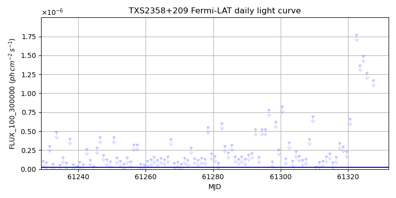
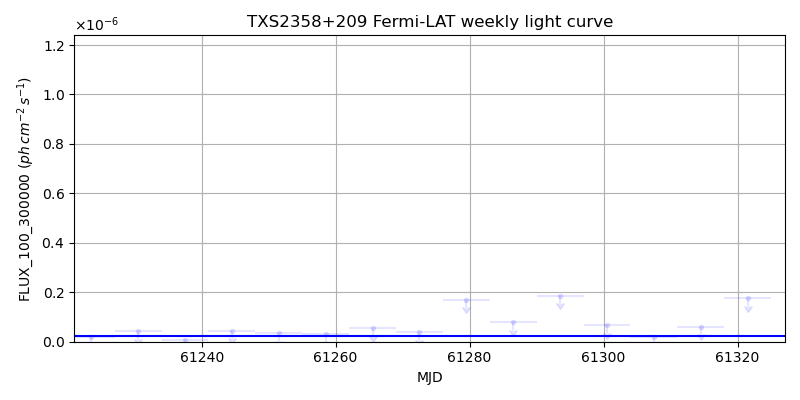
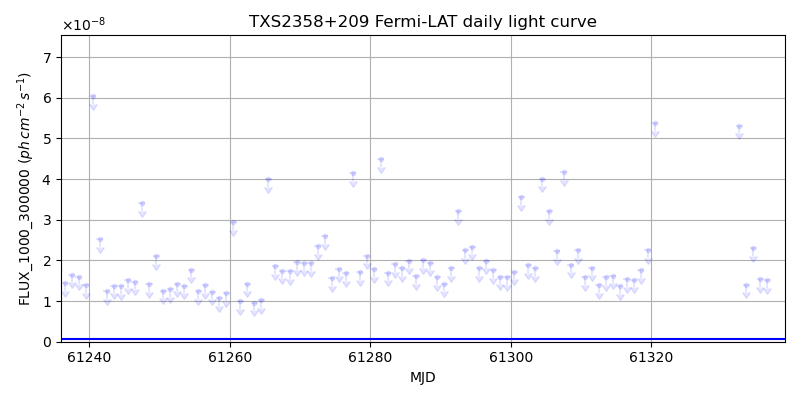
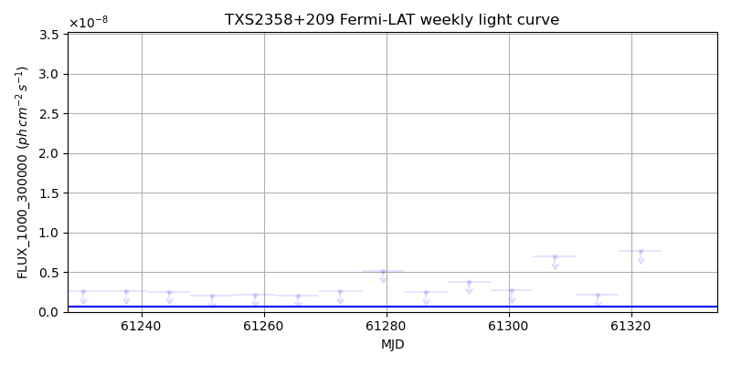

LAT Lightcurve site: https://fermi.gsfc.nasa.gov/ssc/data/access/lat/msl_lc/source/TXS_2358p209
NED: Query
Time of last update of this page: UT: 2026-10-30 15:10 (MJD: 61343.632)
| Property | Value |
|---|---|
| R.A. | 0:01:32.40 |
| Dec. | 21:13:37.2 |
| z | 1.106 |
| 3FGL SpectrumType | LogParabola |
| 3FGL PL Index | |
| 3FGL Flux_100_300000 | 2.29e-08 1 / (s cm2) |
| 3FGL Flux_1000_300000 | 6.11e-10 1 / (s cm2) |
| 3FGL Flux >200 GeV | 3.15e-17 1 / (s cm2) |
| 3FGL Extrap. Crab >200 GeV | 0.00 |
| 3FGL Flux After EBL Absorption >200GeV | 6.67e-19 1 / (s cm2) |
| 3FGL EBL Crab Fraction >200GeV | 0.00 |

| MJD | dMJD | Flux | dFlux | Frac3FGL | FracCrab>200GeV | EBLFracCrab>200GeV |
|---|---|---|---|---|---|---|
| 61338.50 | 0.50 | 6.28e-08 | 0.00e+00 | 0.00 | 0.00 | 0.00 |
| 61339.50 | 0.50 | 1.28e-07 | 0.00e+00 | 0.00 | 0.00 | 0.00 |
| 61340.50 | 0.50 | 2.09e-07 | 0.00e+00 | 0.00 | 0.00 | 0.00 |
| 61341.50 | 0.50 | 4.38e-07 | 0.00e+00 | 0.00 | 0.00 | 0.00 |
| 61342.50 | 0.50 | 5.16e-07 | 0.00e+00 | 0.00 | 0.00 | 0.00 |

| MJD | dMJD | Flux | dFlux | Frac3FGL | FracCrab>200GeV | EBLFracCrab>200GeV |
|---|---|---|---|---|---|---|
| 61307.50 | 3.50 | 1.97e-08 | 0.00e+00 | 0.00 | 0.00 | 0.00 |
| 61314.50 | 3.50 | 6.09e-08 | 0.00e+00 | 0.00 | 0.00 | 0.00 |
| 61321.50 | 3.50 | 1.75e-07 | 0.00e+00 | 0.00 | 0.00 | 0.00 |
| 61328.50 | 3.50 | 4.25e-07 | 0.00e+00 | 0.00 | 0.00 | 0.00 |
| 61335.50 | 3.50 | 6.79e-08 | 0.00e+00 | 0.00 | 0.00 | 0.00 |

| MJD | dMJD | Flux | dFlux | Frac3FGL | FracCrab>200GeV | EBLFracCrab>200GeV |
|---|---|---|---|---|---|---|
| 61338.50 | 0.50 | 1.67e-08 | 0.00e+00 | 0.00 | 0.00 | 0.00 |
| 61339.50 | 0.50 | 2.53e-08 | 0.00e+00 | 0.00 | 0.00 | 0.00 |
| 61340.50 | 0.50 | 5.39e-08 | 0.00e+00 | 0.00 | 0.00 | 0.00 |
| 61341.50 | 0.50 | 2.05e-08 | 0.00e+00 | 0.00 | 0.00 | 0.00 |
| 61342.50 | 0.50 | 1.52e-08 | 0.00e+00 | 0.00 | 0.00 | 0.00 |

| MJD | dMJD | Flux | dFlux | Frac3FGL | FracCrab>200GeV | EBLFracCrab>200GeV |
|---|---|---|---|---|---|---|
| 61307.50 | 3.50 | 6.95e-09 | 0.00e+00 | 0.00 | 0.00 | 0.00 |
| 61314.50 | 3.50 | 2.16e-09 | 0.00e+00 | 0.00 | 0.00 | 0.00 |
| 61321.50 | 3.50 | 7.64e-09 | 0.00e+00 | 0.00 | 0.00 | 0.00 |
| 61328.50 | 3.50 | 1.08e-07 | 0.00e+00 | 0.00 | 0.00 | 0.00 |
| 61335.50 | 3.50 | 2.63e-09 | 0.00e+00 | 0.00 | 0.00 | 0.00 |
--------------------------------------------------------- Using user-supplied coords: 0:01:32.40 21:13:37.2 2000 --------------------------------------------------------- FLWO UT night of: 2026-10-31 Local Sid. @ Midnight: 02:14 Sunset (-15.0) (local, UT): 18:44 01:44 Sunrise (-15.0) (local, UT): 05:31 12:31 Moonrise (local, UT): 21:49 04:49 Moonset (local, UT): Moon phase: 0.68 --------------------------------------------------------- AzTime LSID UT Obj_el Obj_az Mn_el Mn_az Sep. --------------------------------------------------------- 18:44 20:57 01:44 47.7 92.3 -27.0 28.6 94.0 19:14 21:27 02:14 54.0 96.9 -23.9 34.8 94.4 19:44 21:57 02:44 60.3 102.6 -20.2 40.4 94.8 20:14 22:27 03:14 66.5 110.1 -16.1 45.6 95.1 20:44 22:58 03:44 72.3 121.5 -11.6 50.4 95.4 21:14 23:28 04:14 77.1 140.9 -6.7 54.8 95.7 21:44 23:58 04:44 79.7 173.9 -0.9 58.8 96.0 22:14 00:28 05:14 78.3 210.4 3.8 62.5 96.3 22:44 00:58 05:44 73.9 233.6 9.2 66.0 96.6 23:14 01:28 06:14 68.3 246.9 14.8 69.3 96.9 23:44 01:58 06:44 62.3 255.3 20.6 72.5 97.1 00:14 02:28 07:14 56.0 261.4 26.5 75.5 97.4 00:44 02:58 07:44 49.7 266.3 32.5 78.6 97.6 01:14 03:28 08:14 43.3 270.4 38.5 81.7 97.8 01:44 03:58 08:44 36.9 274.2 44.7 84.9 98.1 02:14 04:28 09:14 30.5 277.7 50.8 88.3 98.3 02:44 04:59 09:44 24.2 281.1 57.0 92.2 98.5 03:14 05:29 10:14 18.0 284.5 63.2 97.0 98.7 03:44 05:59 10:44 11.9 288.0 69.3 103.5 98.9 04:14 06:29 11:14 5.9 291.6 75.2 113.7 99.0 04:44 06:59 11:44 0.4 295.4 80.4 133.8 99.2 05:14 07:29 12:14 -5.6 299.5 83.0 177.6 99.4 05:31 07:46 12:31 -8.9 302.0 82.2 206.9 99.5 --------------------------------------------------------- Dark hours >55 deg.: 2.50 srcstart (UT): 2026-10-31 02:18 srcend (UT): 2026-10-31 04:48